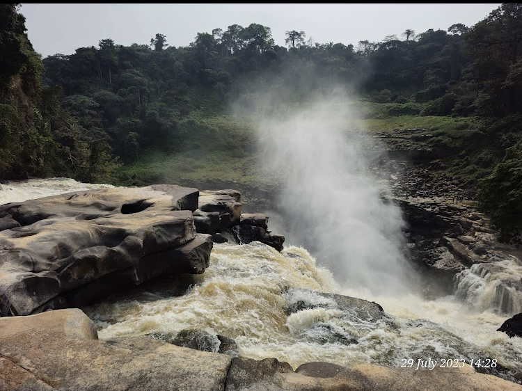
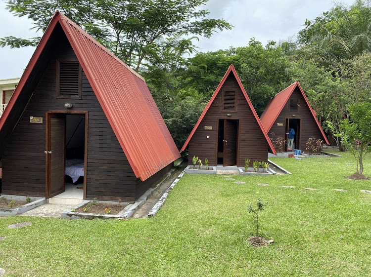
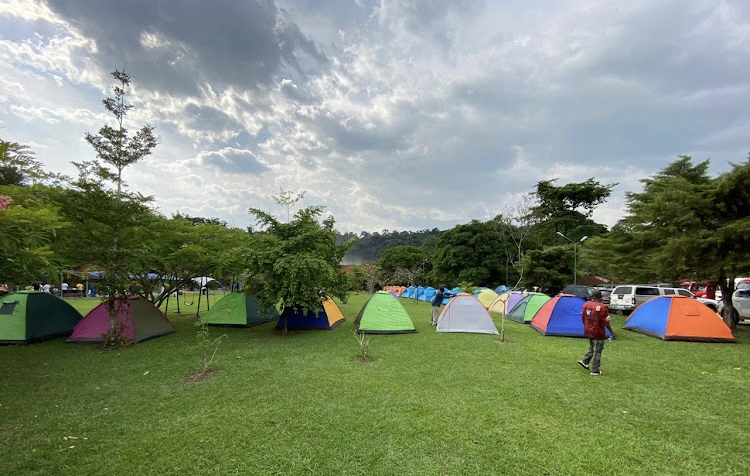
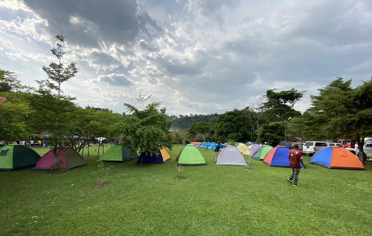
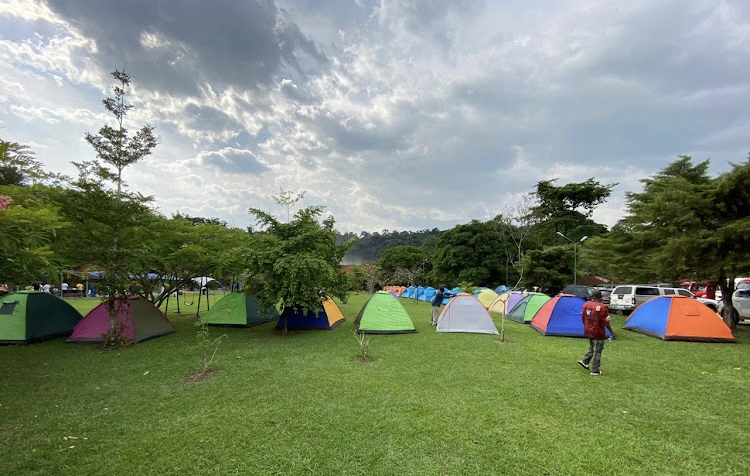
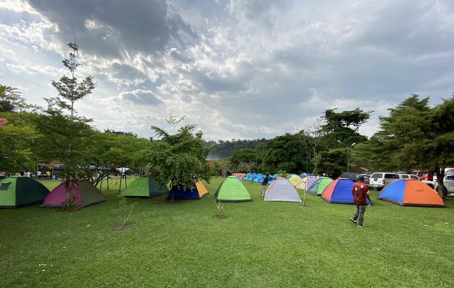

 


Découvrez les somptueuses chutes de zongo,situées à 3 heures de route de Kinshasa-soit plus de 180km de la capitale-,ce coin de paradis et cadre ideal de detente loin du bruit et du stress de la ville.Baignade,promenade vous attendent.sur le chemin de retour vers Kisantu,possibilite de S'approvisionner en produits bio-legumes et fruits frais-au marche de kikonka

.Le masque est obligatoire pour chaque personne
.Les visiter sont tenus de respecter la distanciation sociale dans les vehicules
.Piece d'identite(carte d'electeurs ou passeport)
.Tenue de baignade
.Chaussures de marche et Sandales
.Chapeau et lunettes de solail recommandes